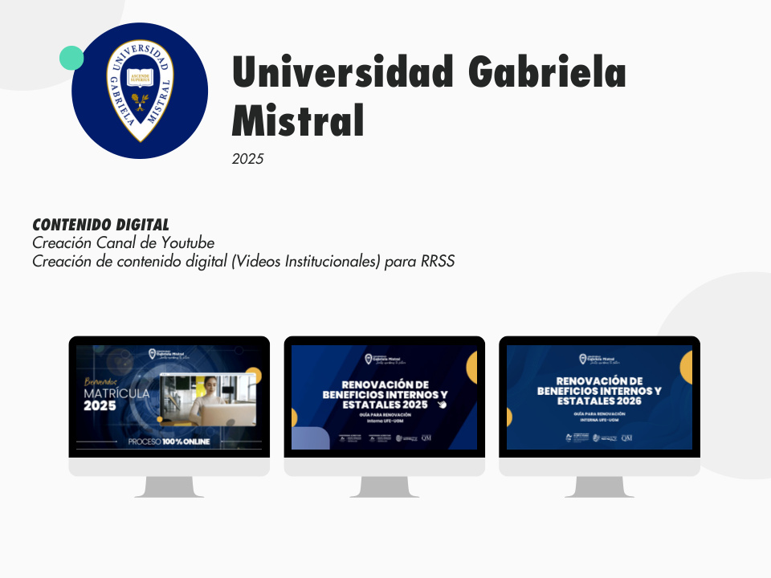
Universidad Gabriela Mistral
Contenido digital · YouTube · Videos institucionales
Una selección de proyectos documentados en mi portfolio 2026. Diseño, contenido, social media, comunicación digital y experiencias web.
Portfolio / Clientes
6 proyectos web desarrollados en WordPress y Shopify. Minimalistas, rápidos y enfocados en conversión.

Contenido digital · YouTube · Videos institucionales
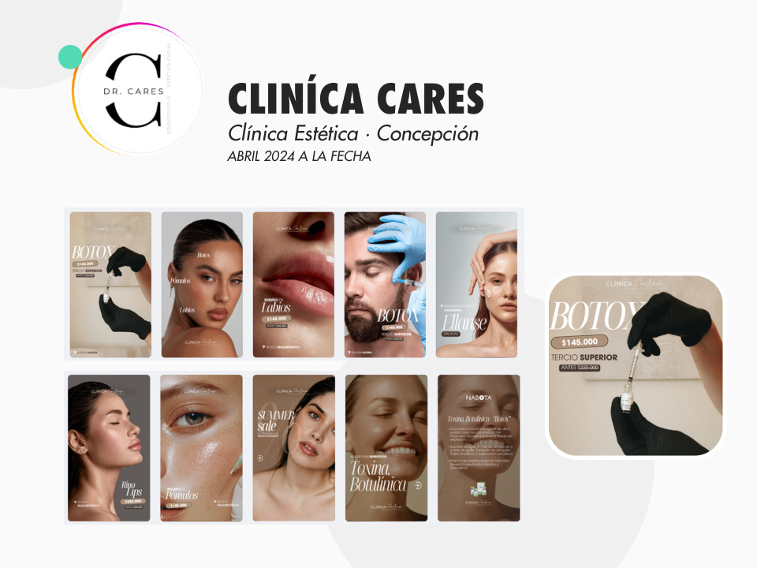
Social Media Manager · Concepción · 2024–actualidad
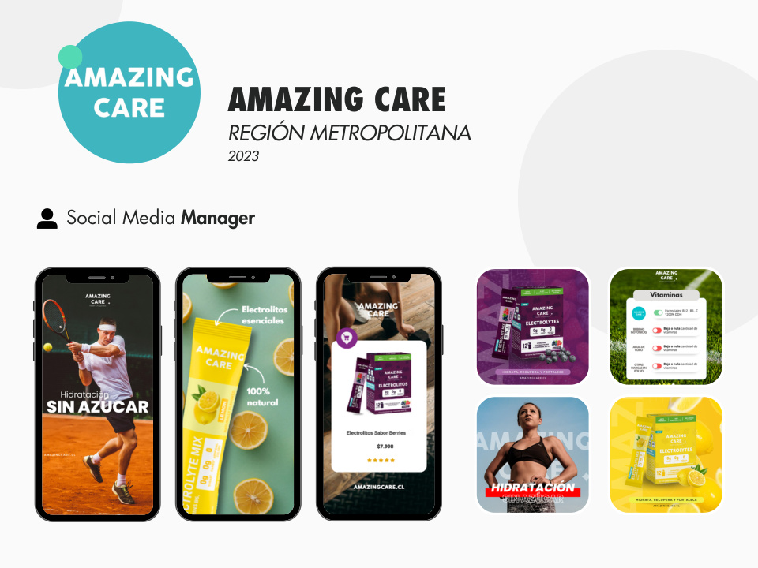
Social Media Manager · Región Metropolitana · 2023
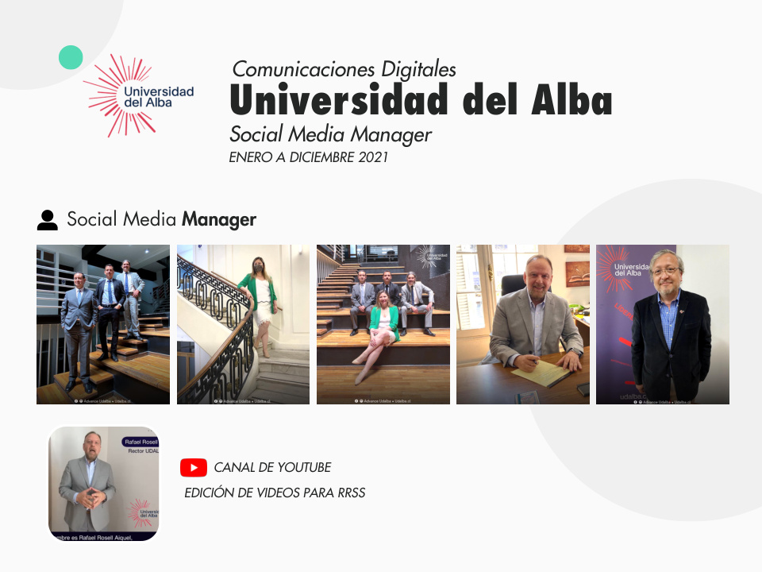
Social Media · Comunicaciones · YouTube · Video
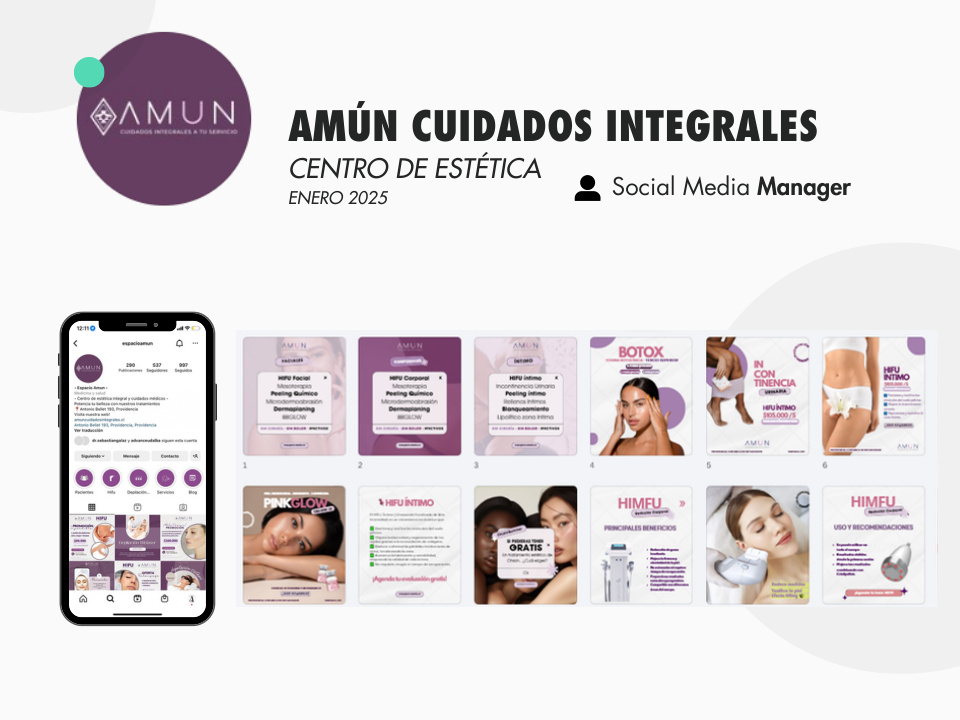
Social Media Manager · Centro de estética · 2025
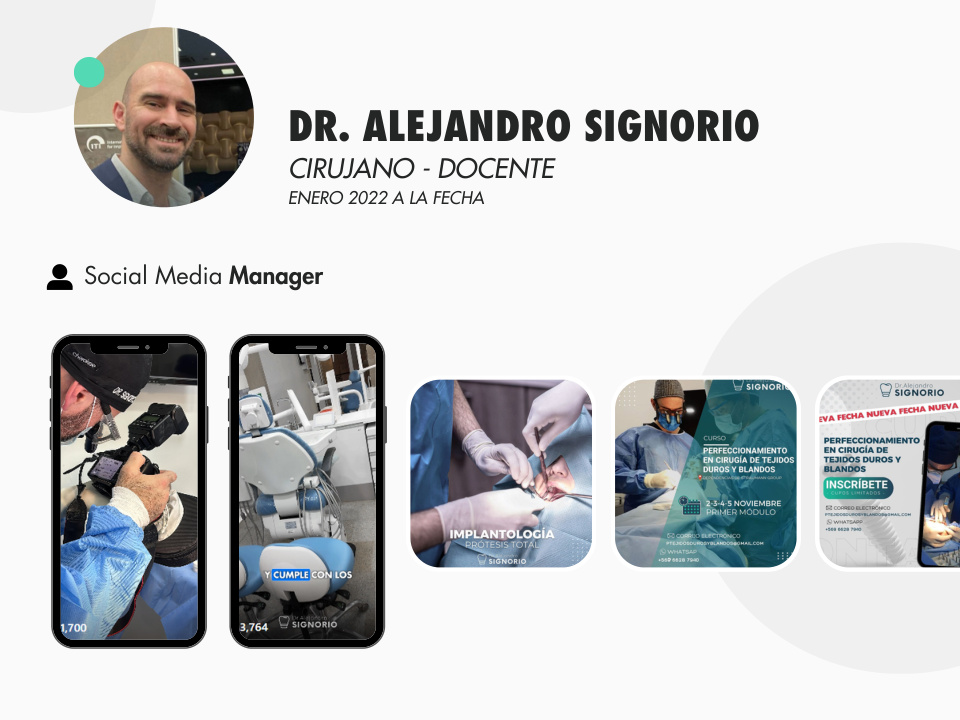
Social Media Manager · Cirujano / Docente · 2022–actualidad
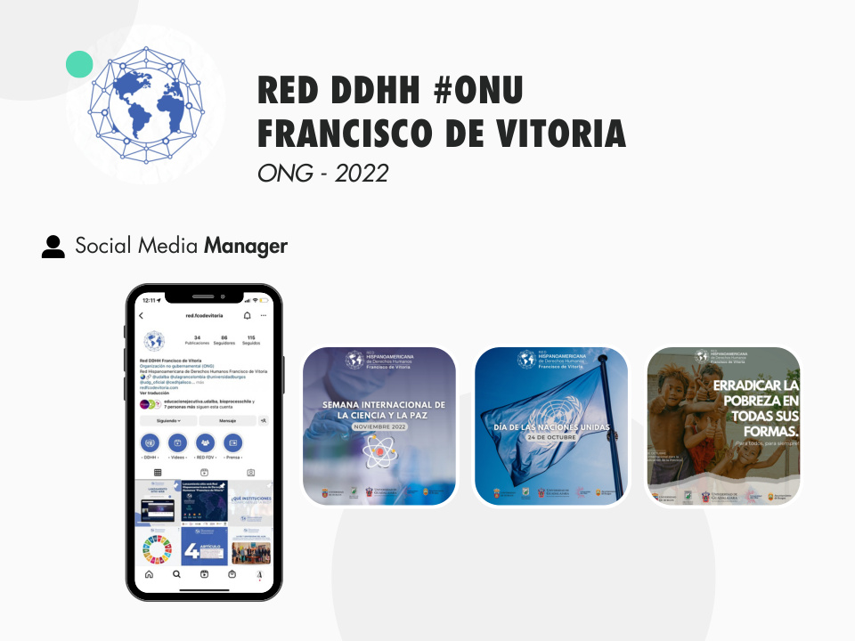
Social Media Manager · ONG · 2022
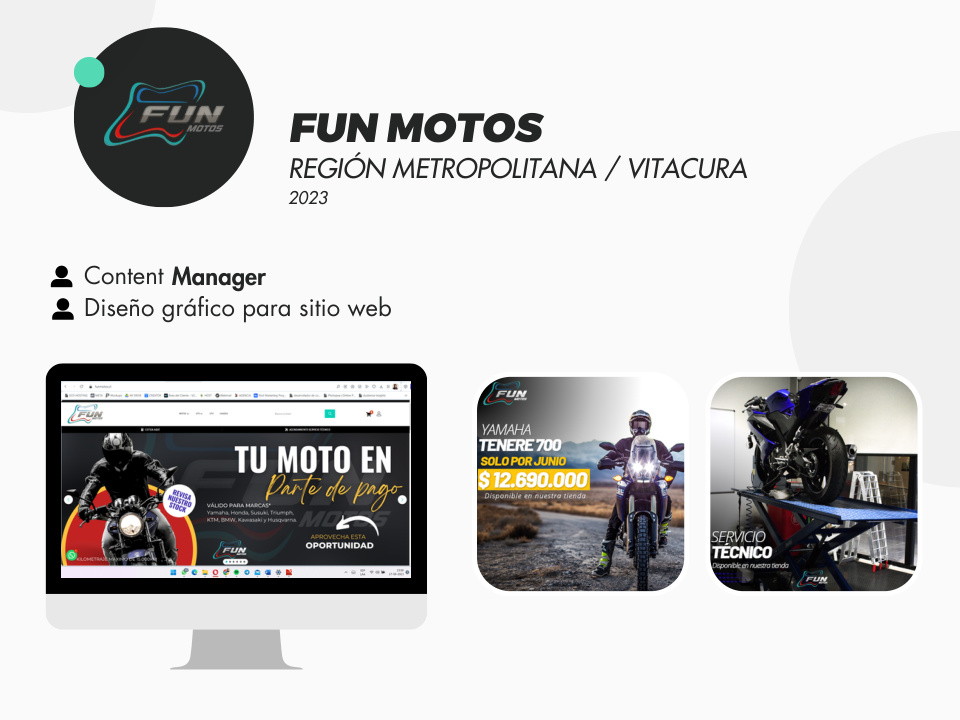
Content Manager · Diseño gráfico para sitio web · 2023
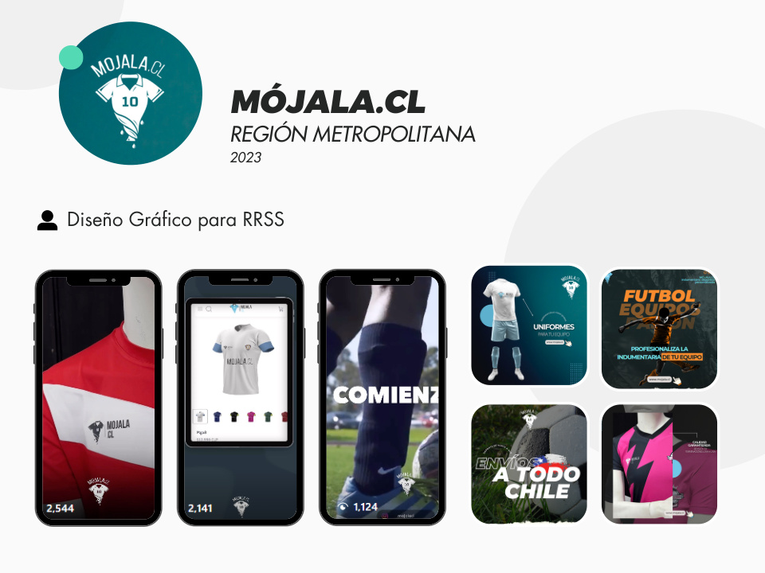
Diseño gráfico para RRSS · Región Metropolitana · 2023
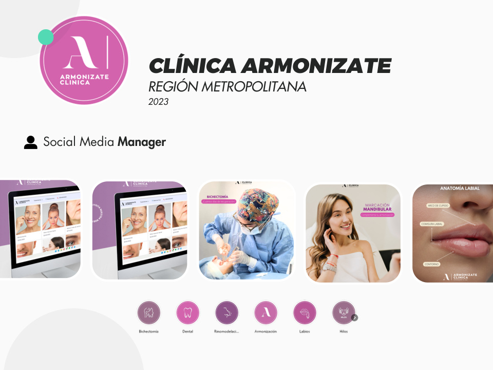
Social Media Manager · Región Metropolitana · 2023
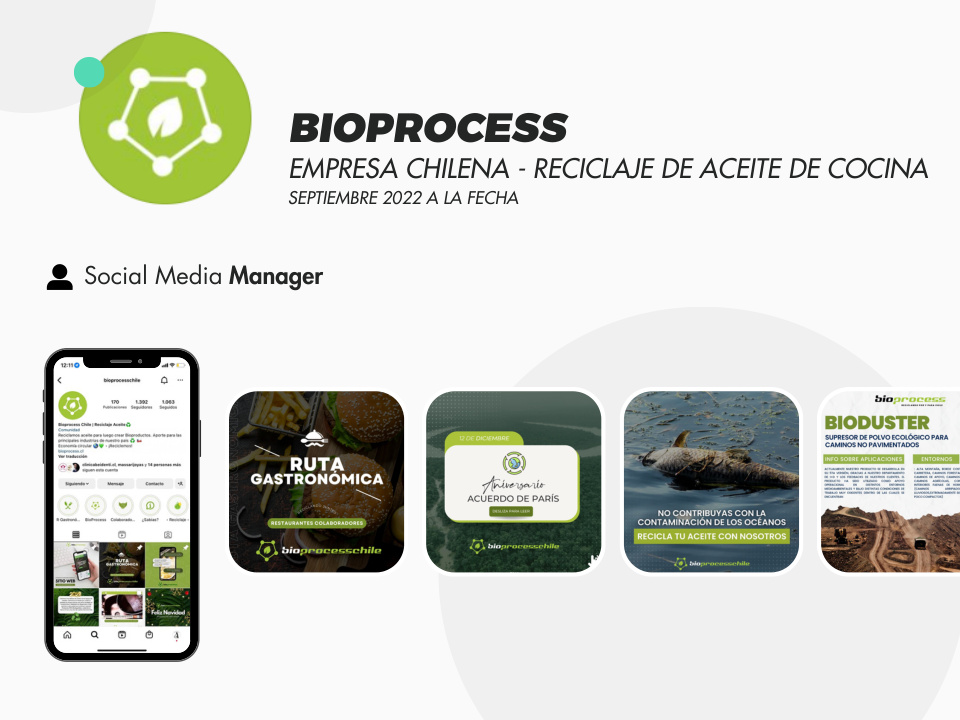
Social Media Manager · Reciclaje de aceite · 2022–actualidad
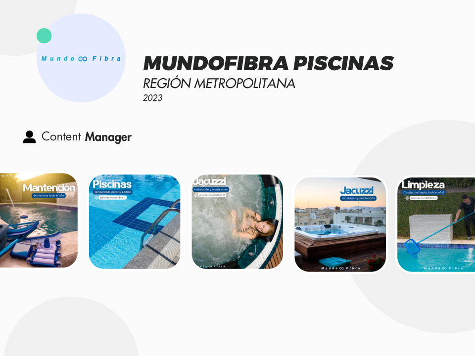
Content Manager · Región Metropolitana · 2023
Si buscas una colaboración estratégica y creativa, cuéntame qué estás construyendo.
Hablemos